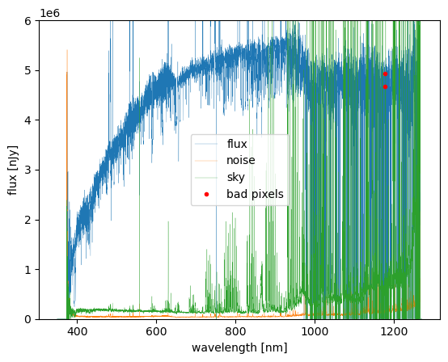

Analyze Coadded-level Data
For most scientific analyses, users are typically more interested in coadded spectra, which combine multiple exposures to improve signal-to-noise and minimize observational systematics. Instead of working with single-visit spectra, astronomers often use coadded spectra for tasks such as redshift determination, spectral classification, and emission-line measurements.
In this section, we will retrieve coadded data, pfsCoadd.
Since the initialization of the butler interface follows the same steps as in the previous section, we will skip that setup here and jump straight into data retrieval.
Check pfsCoadd Data from Object ID
This file is currently grouped by catId (as of 2025/03), meaning all objects from the same catalog will be stored together. However, this structure may evolve in future pipeline updates.
Now, let's assume we want to retrieve spectra for specific objects, given their objId values in a list:
catId = 12345
objId_list = [123, 456] # List of target object IDs
pfsCoadd = butler.get('pfsCoadd', cat_id=catId, combination=rerun)
for objId in objId_list:
spectrum = pfsCoadd[objId]
# Manipulate single object spectrum, as we did for pfsCalibrated in the last section

Since pfsCoadd contains coadded spectra for a single object, this provides a higher S/N spectrum of the target compared to single-visit spectra, reducing noise and improving spectral features.